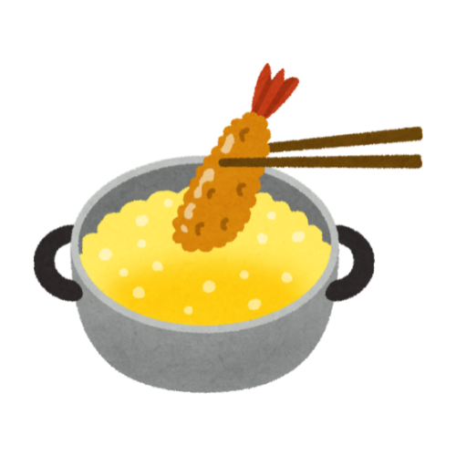
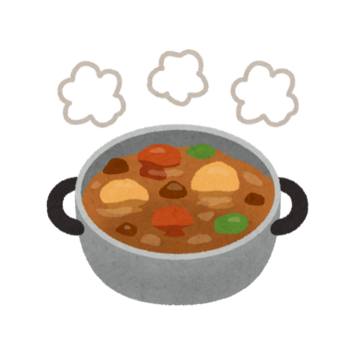

バランス献立の組み合わせルール
主食・主菜・副菜の「調達」を守ることで、 ３つの料理の組み合わせ方が工夫できる！
① ３つの料理とも適量を守る
それぞれの皿の栄養素やカロリー量を意識し、食べ過ぎを防ごう！

② 同じ種類を重ねない
主食・主菜・副菜は、それぞれ「1品」が原則！
同じ種類の料理を避け、栄養の偏りを防ごう！
③ 同じ調理法を重ねない
揚げ物や炒め物など、油や塩分の多い料理が２品以上続くと、摂取量が過剰になりがち！
「揚げる・炒める・煮る・和える・蒸す」など料理法を分散しよう！



④ 同じ主材料を重ねない
品数が多くても、同じ食財や種類のものを
重ねて使うと、
摂取できる栄養素が偏っちゃう！

⑤ 汁物をプラス！料理の１品は汁物に
汁物を加えることで、満足感が高まり、バランスも整いやすくなる！